Capítulo 7 Redes neuronales en series de tiempo
En el presente capítulo se aplican los modelos de redes neuronales recurrentes de Elman y Jordan para la predicción de la temperatura máxima diaria estudiada en el proyecto. Tal como se hizo en los capítulos anteriores se trabajará con los datos de la temperatura seleccionados en el estudio para Valledupar y Medellín.
7.1 Conjunto de datos de prueba y entrenamiento
7.1.1 Normalización datos
Tal como se hizo en capítulos anteriores y se comentó anteriormente, se trabajará con los datos de la temperatura máxima diaria, nuevamente con los conjuntos de datos de Valledupar entre 2018 y 2019 y con los de Medellín entre 2022 y 2023. Para ambos modelos de redes neuronales la información debe ser trabajada en formato ts - Time series y normalizada, paso que se realiza a continuación y se observa en el gráfico su comportamiento posterior a esta transformación.
# Serie xts Temperatura máxima diaria Valledupar 2018-2019
VUP_temp_2018_2019 <- df_temp_max_ts["2018/2019", "VUP"]
# Serie ts Temperatura máxima diaria Valledupar 2018-2019
VUP_temp_2018_2019_ts <- as.ts(VUP_temp_2018_2019)
# Serie xts Temperatura máxima diaria Medellín 2022-2023
MED_temp_2022_2023 <- df_temp_max_ts["2022/2023", "MED"]
# Serie ts Temperatura máxima diaria Medellín 2022-2023
MED_temp_2022_2023_ts <- as.ts(MED_temp_2022_2023)A continuación, se normalizan los datos para las ciudades y periodos seleccionados del conjunto de datos:
# Normalización Medellín
MED_Z <- as.ts(as.numeric(MED_temp_2022_2023_ts), frequency(365))
class(MED_Z)## [1] "ts"## Time-Series [1:730] from 1 to 730: 27.4 26.4 27.8 28 28.2 26 25 26.8 27.4 24.6 ...## Min. 1st Qu. Median Mean 3rd Qu. Max.
## 0.0000 0.4917 0.6167 0.6105 0.7333 1.0000plot(MED_S,
main="Temperatura máxima diaria normalizada Medellín 2022-2023",
xlab="Tiempo / Día", ylab="Temperatura Normalizada",
col="lightgreen")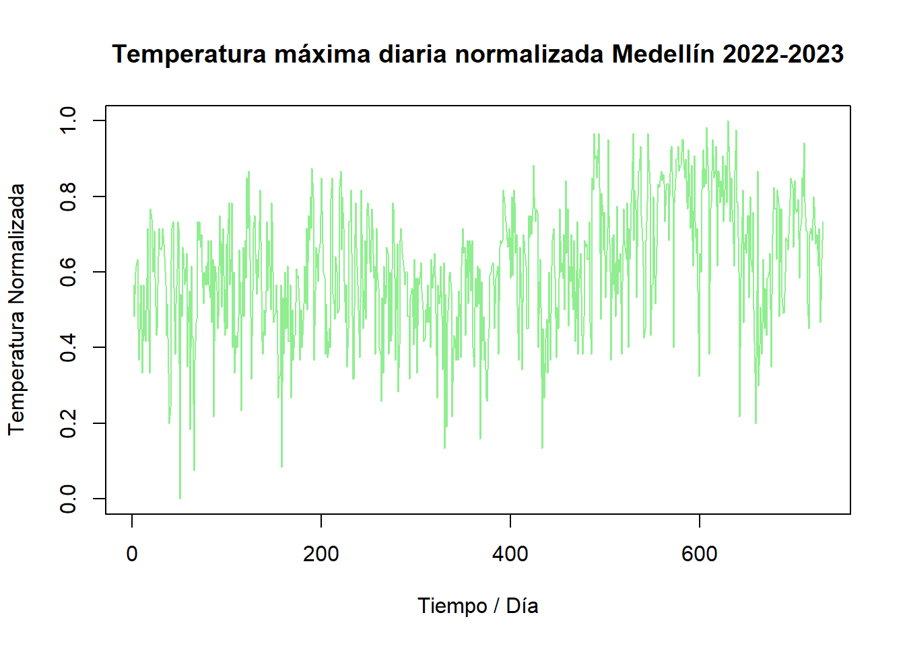
# Normalización Valledupar
VUP_Z <- as.ts(as.numeric(VUP_temp_2018_2019_ts), frequency(365))
class(VUP_Z)## [1] "ts"## Time-Series [1:730] from 1 to 730: 34.2 32.3 33.5 33.4 32.8 34.2 33.9 34.8 34.4 33.3 ...## Min. 1st Qu. Median Mean 3rd Qu. Max.
## 0.0000 0.5020 0.6094 0.6001 0.7031 1.0000plot(VUP_S,
main="Temperatura máxima diaria normalizada Valledupar 2018-2019",
xlab="Tiempo / Día", ylab="Temperatura Normalizada",
col="orange")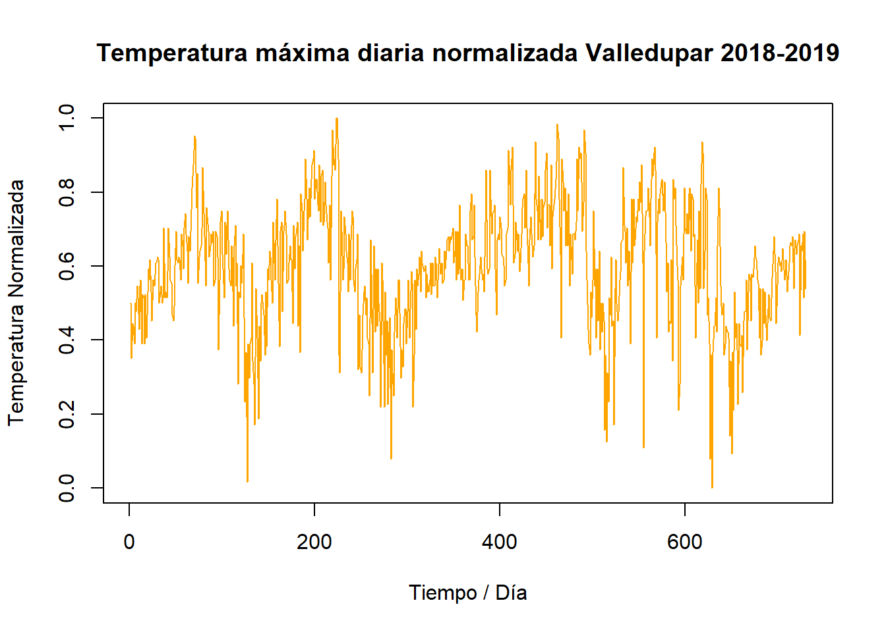
7.1.2 Datos de prueba y entrenamiento
A continuación se separa el conjunto de datos en dos, entrenamiento y prueba (train/test split), en 75% y 25% respectivamente. Posteriormente se genera un dataframe con n columnas, cada una de ellas con un lag adicional hasta llegar a 12, y se seleccionan los valores de entrada y salida de la red neuronal, input / output.
## [1] TRUElen_total <- length(MED_S)
len_train <- round(len_total*0.75, digits = 0)
train <- 0:(len_train-1)
test <- (len_train):len_totalA continuación, se generan las entradas y salidas para Medellín.
# Lags, entradas y salidas Medellín
MED_y <- as.zoo(MED_S)
MED_x1 <- Lag(MED_y, k = 1)
MED_x2 <- Lag(MED_y, k = 2)
MED_x3 <- Lag(MED_y, k = 3)
MED_x4 <- Lag(MED_y, k = 4)
MED_x5 <- Lag(MED_y, k = 5)
MED_x6 <- Lag(MED_y, k = 6)
MED_x7 <- Lag(MED_y, k = 7)
MED_x8 <- Lag(MED_y, k = 8)
MED_x9 <- Lag(MED_y, k = 9)
MED_x10 <- Lag(MED_y, k = 10)
MED_x11 <- Lag(MED_y, k = 11)
MED_x12 <- Lag(MED_y, k = 12)
MED_slogN <- cbind(MED_y,MED_x1,MED_x2,MED_x3,MED_x4,MED_x5,MED_x6,MED_x7,MED_x8,MED_x9,MED_x10,MED_x11,MED_x12)
MED_slogN1 <- MED_slogN[-(1:12),]
MED_inputs <- MED_slogN1[,2:13]
MED_outputs <- MED_slogN1[,1]Ahora se generan las entradas y salidas para Valledupar.
# Lags, entradas y salidas Valledupar
VUP_y <- as.zoo(VUP_S)
VUP_x1 <- Lag(VUP_y, k = 1)
VUP_x2 <- Lag(VUP_y, k = 2)
VUP_x3 <- Lag(VUP_y, k = 3)
VUP_x4 <- Lag(VUP_y, k = 4)
VUP_x5 <- Lag(VUP_y, k = 5)
VUP_x6 <- Lag(VUP_y, k = 6)
VUP_x7 <- Lag(VUP_y, k = 7)
VUP_x8 <- Lag(VUP_y, k = 8)
VUP_x9 <- Lag(VUP_y, k = 9)
VUP_x10 <- Lag(VUP_y, k = 10)
VUP_x11 <- Lag(VUP_y, k = 11)
VUP_x12 <- Lag(VUP_y, k = 12)
VUP_slogN <- cbind(VUP_y,VUP_x1,VUP_x2,VUP_x3,VUP_x4,VUP_x5,VUP_x6,VUP_x7,VUP_x8,VUP_x9,VUP_x10,VUP_x11,VUP_x12)
VUP_slogN1 <- VUP_slogN[-(1:12),]
VUP_inputs <- VUP_slogN1[,2:13]
VUP_outputs <- VUP_slogN1[,1]7.2 Modelo y predicción Modelo Elman
A continuación se presentan los parámetros configurados para la búsqueda los mejores u óptimos a ser empleados para la creación de red neuronal de Elman, se mapearon los valores que podrán ser tomados por la malla en los parámetros, learnFuncParams_grid, size_grid y maxit_grid.
# Parámetros Grid Search Elman
learnFuncParams_grid <- c(0.01, 0.05, 0.1)
size_grid <- list(c(5, 2), c(10, 3), c(15, 5))
maxit_grid <- c(10000, 50000, 100000)
best_rmse <- Inf
best_params <- list()El grid Search de los parámetros sigue el proceso de primero entrenar el modelo Elman para cada combinación de parámetros, luego se calcula el error cuadrático medio y se selecciona la combinación de parámetros que dio el menor MSE.
7.2.1 Elman Medellín
En primer lugar se aplicó grid Search al conjunto de datos de Medellín con el siguiente bucle for:
# Grid search Elman Medellín
for (learnFuncParam in learnFuncParams_grid) {
for (size in size_grid) {
for (maxit in maxit_grid) {
set.seed(42)
fit <- elman(MED_inputs[train, ], MED_outputs[train], size = size, learnFuncParams = learnFuncParam, maxit = maxit)
predictions <- predict(fit, MED_inputs[-train, ])
rmse <- sqrt(mean((MED_outputs[-train] - predictions)^2))
if (rmse < best_rmse) {
best_rmse <- rmse
best_params <- list(learnFuncParams = learnFuncParam, size = size, maxit = maxit)
}
}
}
}Es importante mencionar, que los tiempos computacionales para tanto la corrida de la búsqueda / grid Search para Elman y Jordan son intensivos para ambas ciudades analizadas y estuvieron en alrededor de 7 horas para los dos modelos (4 horas para Medellín).
Teniendo presente lo anterior, se encontró que el mejor modelo de red Elman para Medellín se obtiene con los parámetros que indican una tasa de aprendizaje de 0.01, un número de iteraciones máxima de 10000 y se busca crear 2 capas ocultas, una con 5 y otra con 2, encontrando un RMSE de aproximadamente 0.138 con esta combinación.
## $learnFuncParams
## [1] 0.01
##
## $size
## [1] 5 2
##
## $maxit
## [1] 10000## [1] "Mejor RMSE grid search MED: 0.137767485776398"Con la función plotIterativeError podemos ver cómo ha evolucionado el error de red a lo largo de las iteraciones de entrenamiento, donde ser observa que el error converge a cero rápidamente.Y en el gráfico siguiente se observa como es el ajuste del modelo de Elman (color rojo), observando que sigue bastante bien el comportamiento de la serie original sin embargo que parece haber limitaciones frente a los picos alto y bajos de la serie de prueba.
# Entrenamiento mejores parámetros Elman Medellín
set.seed(42)
MED_fit_elman <- elman(MED_inputs[train, ], MED_outputs[train], size = best_params$size, learnFuncParams = best_params$learnFuncParams, maxit = best_params$maxit)
plotIterativeError(MED_fit_elman,
main = "Error iterativo Elman Medellín",
col="lightgreen")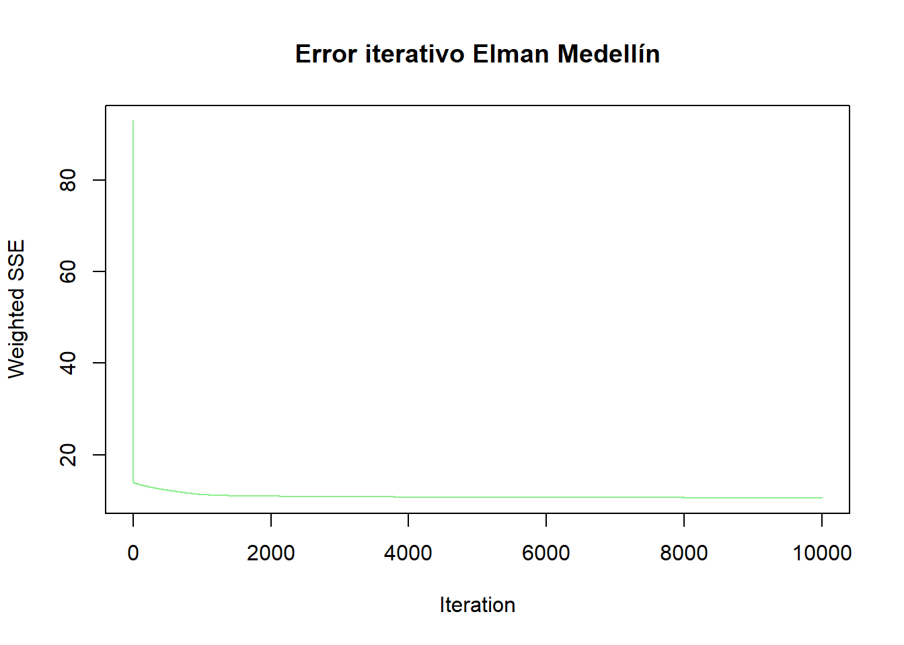
A continuación se compara la predicción de Elman para los datos de prueba de Medellín con los datos reales de temperatura (normalizados).
# Predicción test Elman Medellín
MED_y_test <- as.vector(MED_outputs[-test])
plot(MED_y_test,type="l",
main = "Predicción Prueba / Test Elman Medellín",
col="lightgreen")
MED_pred_elman <- predict(MED_fit_elman, MED_inputs[-test])
lines(MED_pred_elman,col = "red")
legend("bottomright", legend = c("Real", "Predicción"), col = c("lightgreen", "red"), lwd = 2)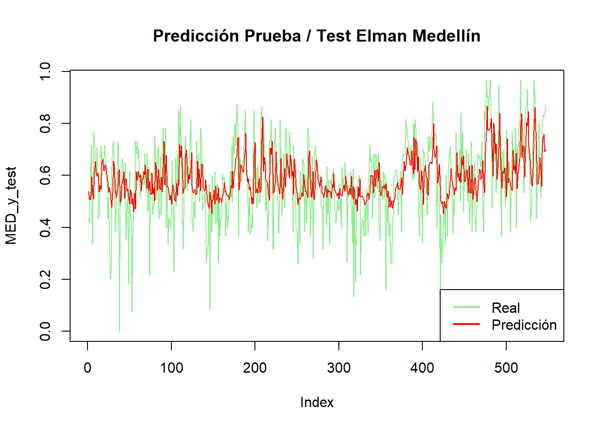
Se evidencia en la figura anterior, que la predicción de Elman capta en general la tendencia de las mediciones de temperatura de Medellín (en este caso normalizadas), pero no reproduce bien los picos extremos (especialmente los mínimos).
A continuación se ejecuta el modelo de predicción para realizar una visualización de como sería el comportamiento de la temperatura máxima posterior a las fechas de referencia que se están usando, y observar si parece mantener la tendencia general de los datos históricos. En este caso la predicción se gráfica de color rojo visualizando que parece presentar datos cercanos a la tendencia y no genera picos demasiado pronunciados, por lo que el pronóstico es coherente.
# Predicción train Elman Medellín
MED_predictions_elman <- predict(MED_fit_elman, MED_inputs[-train])
MED_forecasting_elman <- MED_predictions_elman*(max(MED_Z)-min(MED_Z))+min(MED_Z)
MED_x_elman <- 1:(len_total+length(MED_forecasting_elman))
MED_y_elman <- c(as.vector(MED_Z), MED_forecasting_elman)
plot(MED_x_elman[1:len_total], MED_y_elman[1:len_total], type="l",
main="Forecasting Elman Temperatura Medellín",
xlab="Tiempo / Día",
ylab="Temperatura [ºC]",
col = "lightgreen")
lines(MED_x_elman[(len_total):length(MED_x_elman)], MED_y_elman[(len_total):length(MED_x_elman)], col="red")
legend("bottomright", legend = c("Real", "Predicción"), col = c("lightgreen", "red"), lwd = 2)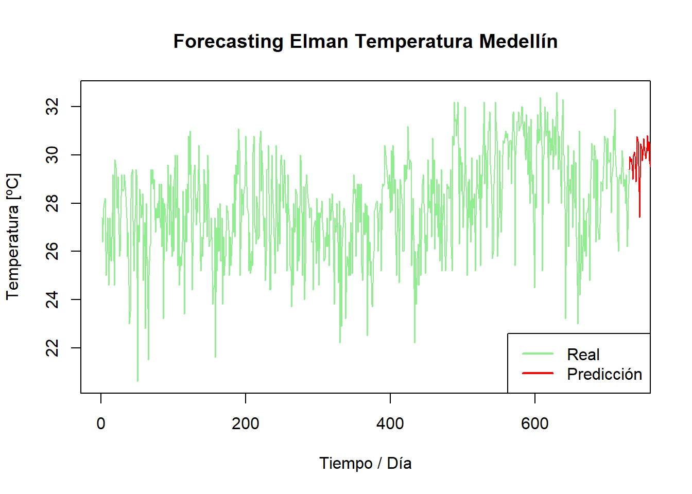
7.2.2 Elman Valledupar
Para Valledupar al igual que con Medellín se aplicó bucle grid search al conjunto de datos de precipitación para encontrar los parámetros óptimos para Elman (la corrida fue de cerca de 3 horas para Elman y Jordan -siendo más intensivo este último modelo / redes-):
# Grid search Elman Valledupar
for (learnFuncParam in learnFuncParams_grid) {
for (size in size_grid) {
for (maxit in maxit_grid) {
set.seed(42)
fit <- elman(VUP_inputs[train, ], VUP_outputs[train], size = size, learnFuncParams = learnFuncParam, maxit = maxit)
predictions <- predict(fit, VUP_inputs[-train, ])
rmse <- sqrt(mean((VUP_outputs[-train] - predictions)^2))
if (rmse < best_rmse) {
best_rmse <- rmse
best_params <- list(learnFuncParams = learnFuncParam, size = size, maxit = maxit)
}
}
}
}Para Valledupar, se encontró que el mejor modelo de red Elman se obtiene con los parámetros que indican una tasa de aprendizaje de 0.01, un número de iteraciones máxima de 10000 y se busca crear 2 capas ocultas, una con 10 y otra con 3, encontrando un RMSE de aproximadamente 0.135 con esta combinación.
## $learnFuncParams
## [1] 0.01
##
## $size
## [1] 10 3
##
## $maxit
## [1] 10000## [1] "Mejor RMSE grid search MED: 0.135409646265315"Vemos ahora, para Valledupar la evolución el error de red a lo largo de las iteraciones de entrenamiento con plotIterativeError.
# Entrenamiento mejores parámetros Elman Valledupar
set.seed(42)
VUP_fit_elman <- elman(VUP_inputs[train, ], VUP_outputs[train], size = best_params$size, learnFuncParams = best_params$learnFuncParams, maxit = best_params$maxit)
plotIterativeError(VUP_fit_elman,
main = "Error iterativo Elman Valledupar",
col="orange")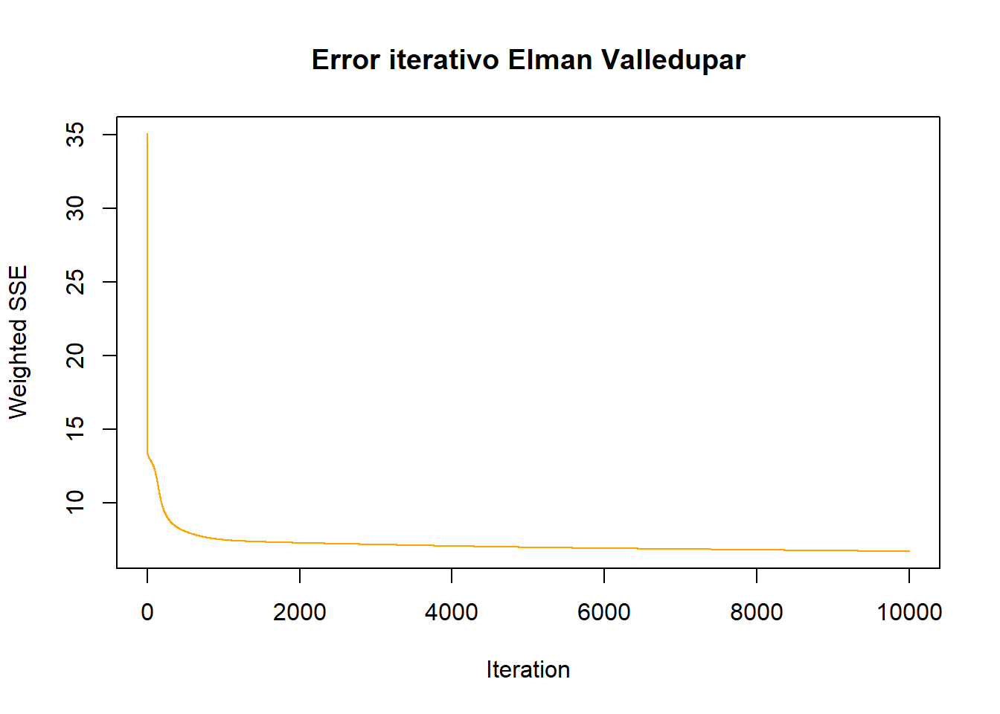
A continuación se compara la predicción de Elman para los datos de prueba / test de Valledupar.
# Predicción test Elman Valledupar
VUP_y_test <- as.vector(VUP_outputs[-test])
plot(VUP_y_test,type="l",
main = "Predicción Prueba / Test Elman Valledupar",
col="orange")
VUP_pred_elman <- predict(VUP_fit_elman, VUP_inputs[-test])
lines(VUP_pred_elman,col = "red")
legend("bottomright", legend = c("Real", "Predicción"), col = c("orange", "red"), lwd = 2)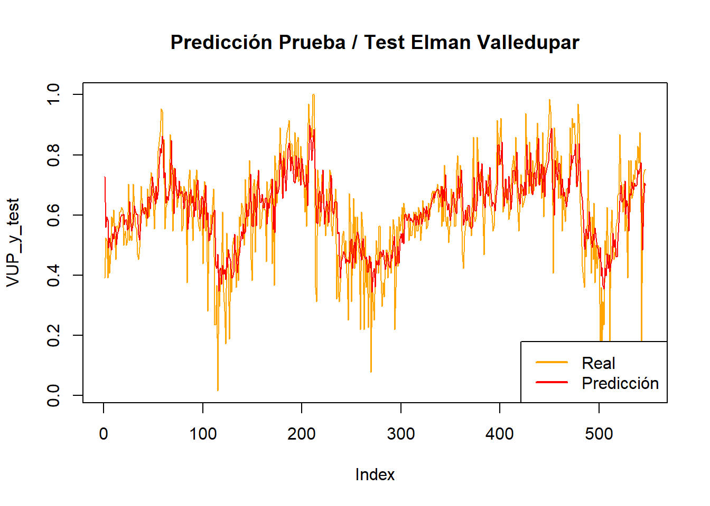
Como se puede observar en la gráfica anterior la predicción para los datos de prueba se ajusta a la tendencia general de la temperatura de Valledupar, aunque no es el caso para los máximos y mínimos.
A continuación se ejecuta el modelo de predicción para realizar una visualización de como sería el comportamiento de la temperatura máxima posterior a las fechas de referencia que se están usando, y como se observa la predicción (en rojo) se encuentran dentro de la tendencia de los datos reales históricos.
# Predicción train Elman Valledupar
VUP_predictions_elman <- predict(VUP_fit_elman, VUP_inputs[-train])
VUP_forecasting_elman <- VUP_predictions_elman*(max(VUP_Z)-min(VUP_Z))+min(VUP_Z)
VUP_x_elman <- 1:(len_total+length(VUP_forecasting_elman))
VUP_y_elman <- c(as.vector(VUP_Z), VUP_forecasting_elman)
plot(VUP_x_elman[1:len_total], VUP_y_elman[1:len_total], type="l",
main="Forecasting Elman Temperatura Valledupar",
xlab="Tiempo / Día",
ylab="Temperatura [ºC]",
col = "orange")
lines(VUP_x_elman[(len_total):length(VUP_x_elman)], VUP_y_elman[(len_total):length(VUP_x_elman)], col="red")
legend("bottomright", legend = c("Real", "Predicción"), col = c("orange", "red"), lwd = 2)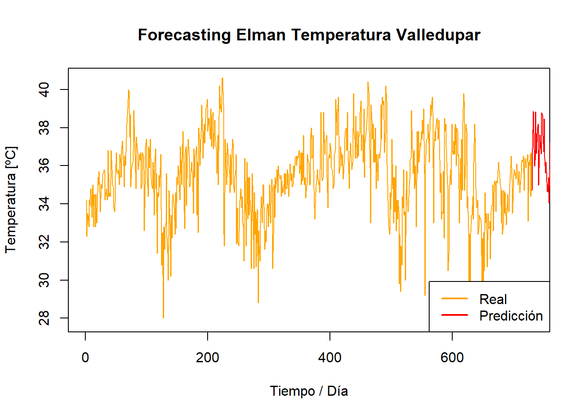
7.3 Modelo y predicción Jordan
Tal como se describió con Elman, a continuación se presentan los parámetros para la búsqueda grid search para Jordan, nuevamente con learnFuncParams_grid, size_grid y maxit_grid.
# Parametros Grid Search Jordan
learnFuncParams_grid <- c(0.01, 0.05, 0.1)
size_grid <- list(25, 50, 100, 150)
maxit_grid <- c(10000, 50000, 100000)
best_rmse <- Inf
best_params <- list()7.3.1 Jordan Medellín
Como con Elman, el grid Search entrena el modelo Jordan para cada combinación de parámetros, luego se calcula el error cuadrático medio y se selecciona la combinación de parámetros que dio el menor MSE de la misma manera que se ejecutó en el numeral anterior.
# Grid search Jordan Medellín
for (learnFuncParam in learnFuncParams_grid) {
for (size in size_grid) {
for (maxit in maxit_grid) {
set.seed(42)
fit <- jordan(MED_inputs[train, ], MED_outputs[train], size = size, learnFuncParams = learnFuncParam, maxit = maxit)
predictions <- predict(fit, MED_inputs[-train, ])
rmse <- sqrt(mean((MED_outputs[-train] - predictions)^2))
if (rmse < best_rmse) {
best_rmse <- rmse
best_params <- list(learnFuncParams = learnFuncParam, size = size, maxit = maxit)
}
}
}
}
# Mejores parámetros Jordan Medellín
print(best_params)## $learnFuncParams
## [1] 0.05
##
## $size
## [1] 100
##
## $maxit
## [1] 50000## [1] "Mejor RMSE: 0.529416657478955"Se encontró que el mejor modelo de red Jordan se obtiene con los parámetros que indican una tasa de aprendizaje de 0.05, un número de iteraciones máxima de 50000 y un 100 capas ocultas, con un RMSE de aproximadamente 0.529 con esta combinación. Es importante notar que el modelo de Elman presento un RMSE menor, por lo cual esta metodología presentó mejores resultados frente al caso Jordan.
#Verificación parámetros
print(paste("size = ", best_params$size, "learnFuncParams = ", best_params$learnFuncParams, "maxit = ", best_params$maxit))## [1] "size = 100 learnFuncParams = 0.05 maxit = 50000"Con la función plotIterativeError nuevamente como se hizo con el modelo previo podemos ver cómo ha evolucionado el error de red a lo largo de las iteraciones de entrenamiento, donde ser observa que el error converge a cero rápidamente.
# Entrenamiento mejores parámetros Jordan Medellín
MED_fit_jordan <- jordan(MED_inputs[train, ], MED_outputs[train], size = best_params$size, learnFuncParams = best_params$learnFuncParams, maxit = best_params$maxit)
plotIterativeError(MED_fit_jordan,
main = "Error iterativo Jordan Medellín",
col="lightgreen")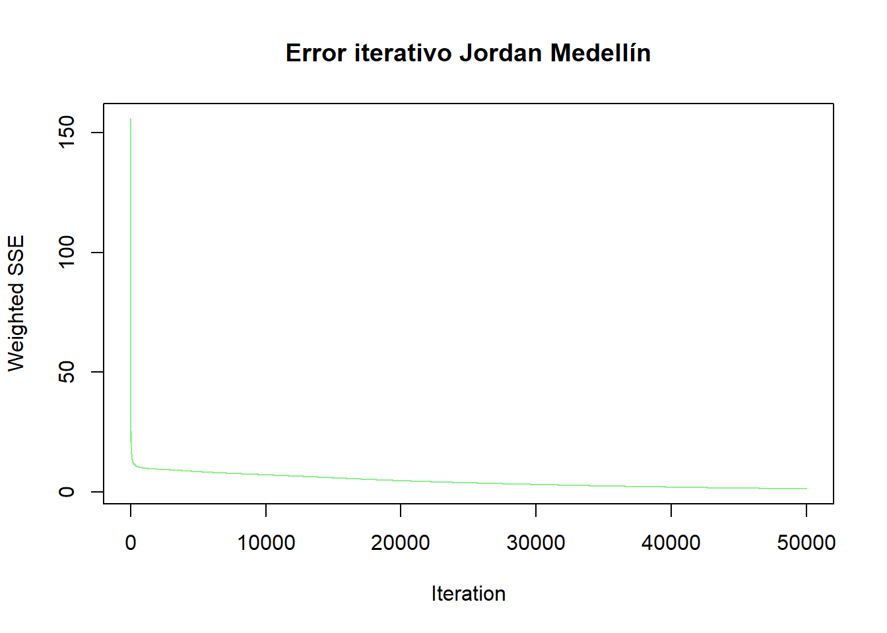
En el gráfico siguiente se observa como es el ajuste del modelo de Jordan (color rojo), observando que sigue la tendencia y comportamiento de la serie original, aunque es notorio que se presentan picos más pronunciados que no se evidenciaron con las redes Elman.
# Predicción test Jordan Medellín
plot(MED_y_test, type = "l",
main = "Predicción Prueba / Test Jordan Medellín",
col="lightgreen")
MED_pred_jordan <- predict(MED_fit_jordan, MED_inputs[-test])
lines(MED_pred_jordan, col = "red")
legend("bottomright", legend = c("Real", "Predicción"), col = c("lightgreen", "red"), lwd = 2)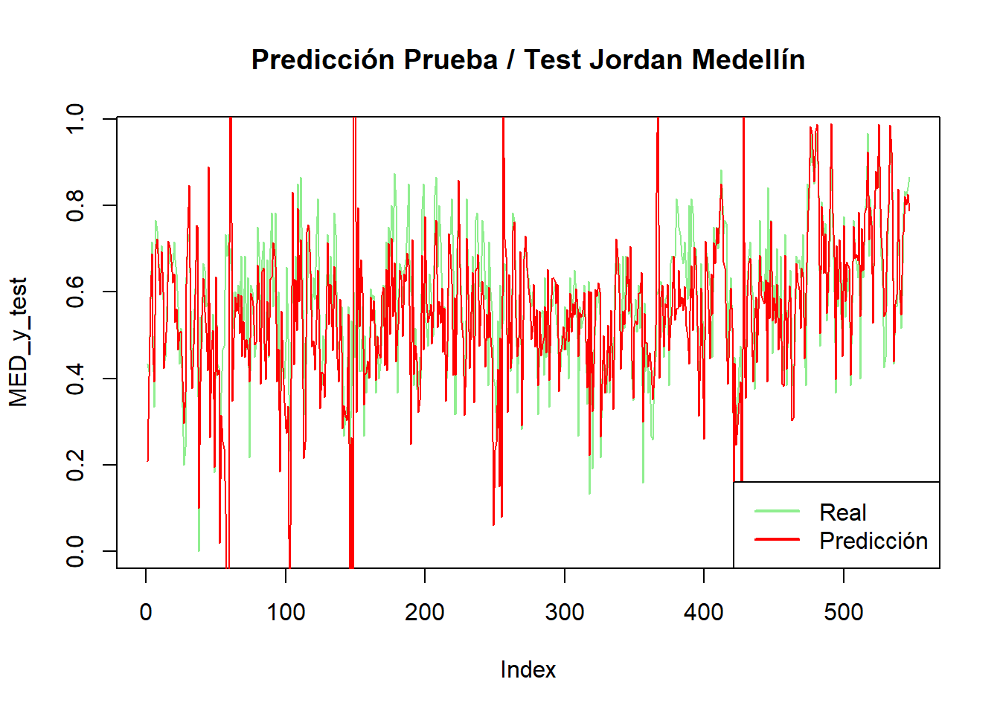
A continuación, se ejecuta el modelo de predicción para realizar una visualización de como sería el comportamiento de la temperatura máxima posterior a las fechas de referencia que se están usando, y observar si parece mantener la tendencia general de los datos históricos. En este caso la predicción o el forecasting se gráfica nuevamente de color rojo, observándose predicciones dentro del rango de la serie original, incluso con un mínimo como los que se encuentran en los registros originales.
# Predicción train Jordan Medellín
MED_predictions_jordan <- predict(MED_fit_jordan, MED_inputs[-train])
MED_forecasting_jordan <- MED_predictions_jordan * (max(MED_Z) - min(MED_Z)) + min(MED_Z)
MED_x_jordan <- 1:(len_total + length(MED_forecasting_jordan))
MED_y_jordan <- c(as.vector(MED_Z), MED_forecasting_jordan)
plot(MED_x_jordan[1:len_total], MED_y_jordan[1:len_total], type = "l",
main="Forecasting Jordan Temperatura Medellín",
xlab="Tiempo / Día",
ylab="Temperatura [ºC]",
col = "lightgreen")
lines(MED_x_jordan[(len_total):length(MED_x_jordan)], MED_y_jordan[(len_total):length(MED_x_jordan)], col = "red")
legend("bottomright", legend = c("Real", "Predicción"), col = c("lightgreen", "red"), lwd = 2)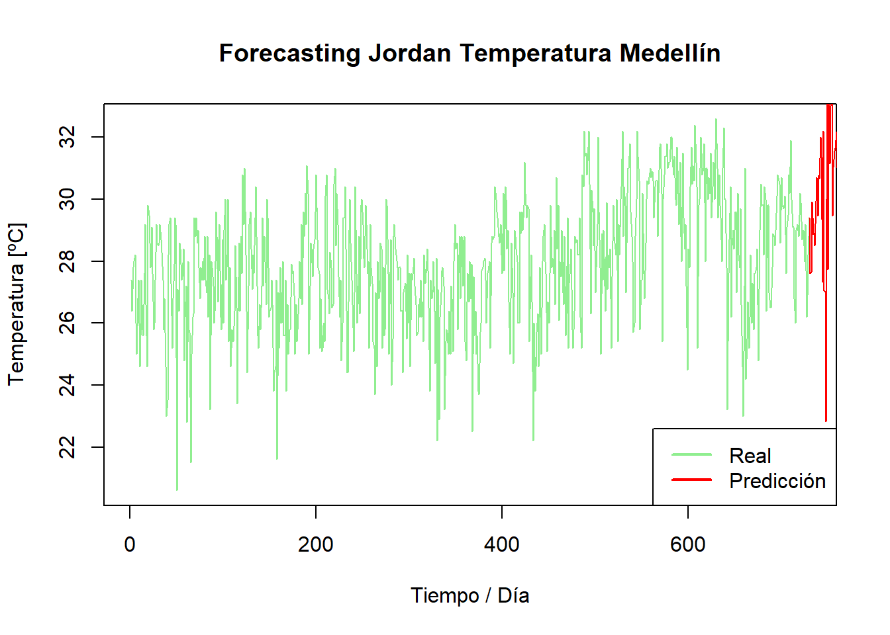
7.3.2 Jordan Valledupar
Como se ha realizado anteriormente, se aplica ahora para Valledupar el grid search para obtener los mejores parámetros del modelo Jordan.
# Grid search Jordan Valledupar
for (learnFuncParam in learnFuncParams_grid) {
for (size in size_grid) {
for (maxit in maxit_grid) {
set.seed(42)
fit <- jordan(VUP_inputs[train, ], VUP_outputs[train], size = size, learnFuncParams = learnFuncParam, maxit = maxit)
predictions <- predict(fit, VUP_inputs[-train, ])
rmse <- sqrt(mean((VUP_outputs[-train] - predictions)^2))
if (rmse < best_rmse) {
best_rmse <- rmse
best_params <- list(learnFuncParams = learnFuncParam, size = size, maxit = maxit)
}
}
}
}
# Mejores parámetros Jordan Valledupar
print(best_params)## $learnFuncParams
## [1] 0.01
##
## $size
## [1] 50
##
## $maxit
## [1] 1e+05## [1] "Mejor RMSE: 0.309209461706702"Se encontró que el mejor modelo de red Jordan se obtiene con los parámetros que indican una tasa de aprendizaje de 0.01, un número de iteraciones máxima de 100000 y un 50 capas ocultas, con un RMSE de aproximadamente 0.309 con esta combinación. Es importante notar que el modelo de Elman presento un RMSE menor, por lo cual esta metodología presentó mejores resultados frente al caso Jordan.
Con la función plotIterativeError nuevamente como se hizo con el modelo previo podemos ver cómo evoluciona el error de red a lo largo de las iteraciones de entrenamiento, donde ser observa que el error converge a cero rápidamente.
# Entranamiento mejores parámetros Jordan Valledupar
VUP_fit_jordan <- jordan(VUP_inputs[train, ], VUP_outputs[train], size = best_params$size, learnFuncParams = best_params$learnFuncParams, maxit = best_params$maxit)
plotIterativeError(VUP_fit_jordan,
main = "Error iterativo Jordan Valledupar",
col="orange")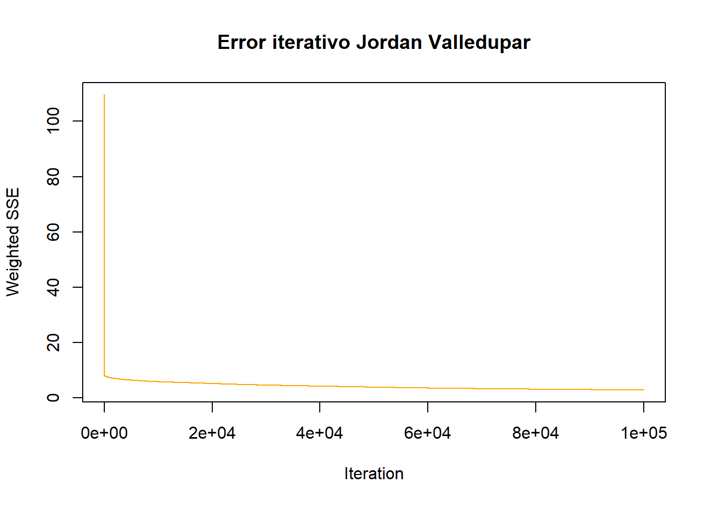
En el gráfico siguiente se observa en rojo la predicción para los datos de prueba / test del modelo Jordan, es notorio que el pronóstico no refleja bien la tendencia y de hecho se presentan vacíos o huecos respecto a los registros reales de Valledupar (en naranja).
# Predicción test Jordan Valledupar
plot(VUP_y_test, type = "l",
main = "Predicción Prueba / Test Jordan Valledupar",
col="orange")
VUP_pred_jordan <- predict(VUP_fit_jordan, VUP_inputs[-test])
lines(VUP_pred_jordan, col = "red")
legend("bottomright", legend = c("Real", "Predicción"), col = c("orange", "red"), lwd = 2)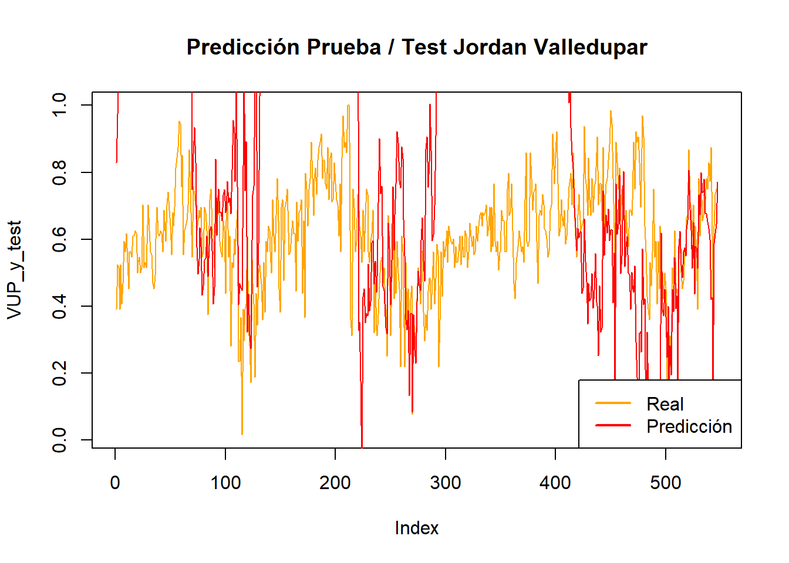
Independiente de lo anterior, se generan el pronóstico para Valledupar, como en los numerales anteriores, la predicción se encuentra en color rojo y el comportamiento se encuentra dentro del rango de los datos reales.
# Predicción train Jordan Valledupar
VUP_predictions_jordan <- predict(VUP_fit_jordan, VUP_inputs[-train])
VUP_forecasting_jordan <- VUP_predictions_jordan * (max(VUP_Z) - min(VUP_Z)) + min(VUP_Z)
VUP_x_jordan <- 1:(len_total + length(VUP_forecasting_jordan))
VUP_y_jordan <- c(as.vector(VUP_Z), VUP_forecasting_jordan)
plot(VUP_x_jordan[1:len_total], VUP_y_jordan[1:len_total], type = "l",
main="Forecasting Jordan Temperatura Valledupar",
xlab="Tiempo / Día",
ylab="Temperatura [ºC]",
col = "orange")
lines(VUP_x_jordan[(len_total):length(VUP_x_jordan)], VUP_y_jordan[(len_total):length(VUP_x_jordan)], col = "red")
legend("bottomright", legend = c("Real", "Predicción"), col = c("orange", "red"), lwd = 2)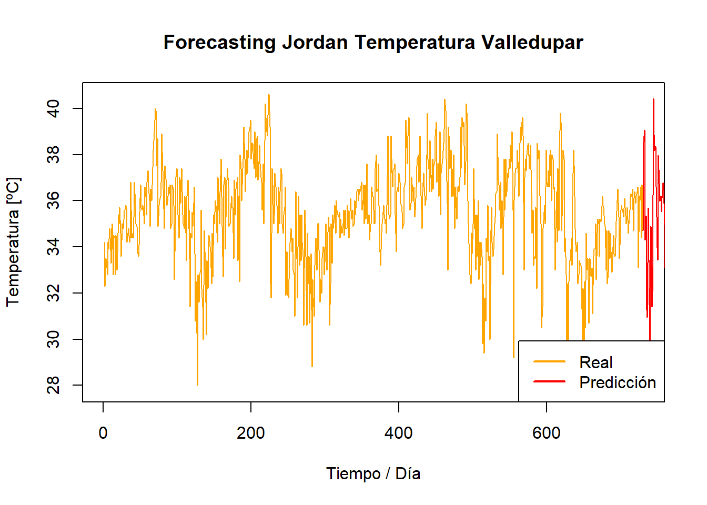
7.4 Observaciones finales redes neuronales
De todos los métodos / modelos aplicados a las series de tiempo meteorológicas estudiadas, las redes neuronales recurrentes son las que han captado mejor el comportamiento de los registros de temperatura; aunque como se ha mencionado con un alto costo computacional (corridas de varias horas respecto a los segundos o minutos de todos los modelos de los capítulos anteriores). Por lo tanto, es importante analizar o la arquitectura necesaria y su costo para generar predicciones continuas si se requieren los pronósticos de manera continua.